✿ A Little About Me
Hi! My name is Lipra Routray. I'm someone who loves creating things, exploring new ideas, and finding beauty in the little things.
✧ Get to know me better
I'm a Computer Science student with a creative side. I enjoy learning new skills, making things with my hands, and expressing my personality through my interests.
♡ Things I Love
✦ Clay Creations
I was part of the clay modelling club in school, where we used to make small sculptures and display them at school exhibitions. That’s where I first got interested in working with clay, and over time it turned into a hobby I genuinely enjoy. Since then, I’ve been trying to improve my creations, experiment with different ideas, and work with different types of clay to see what I can make with each one.
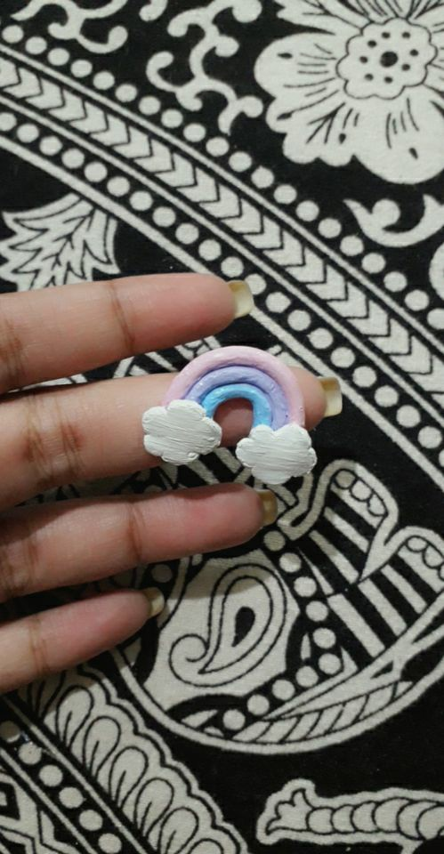
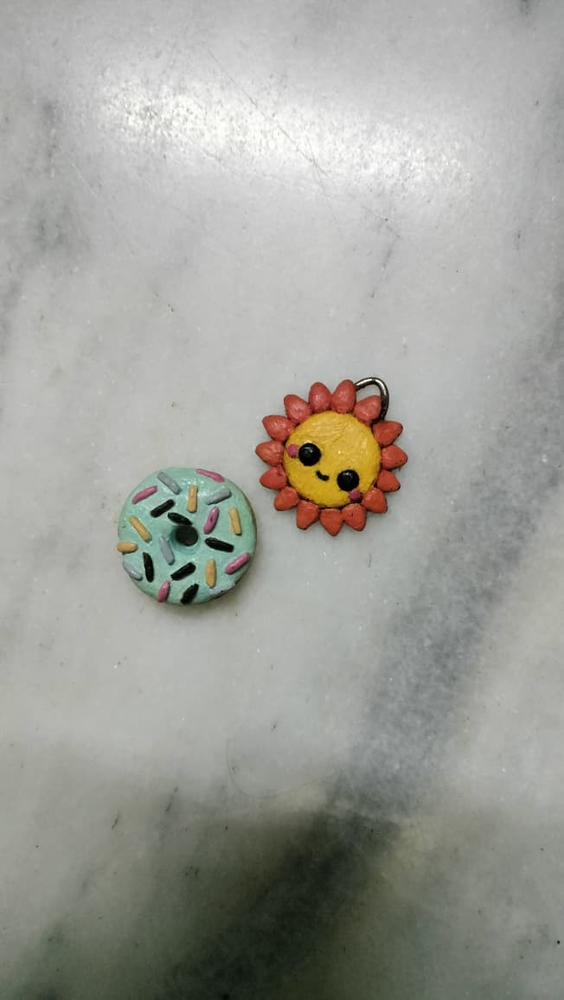
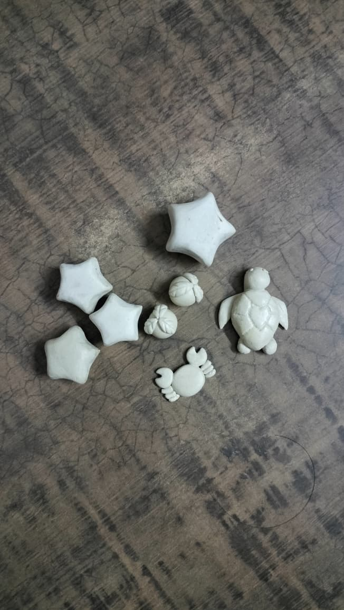
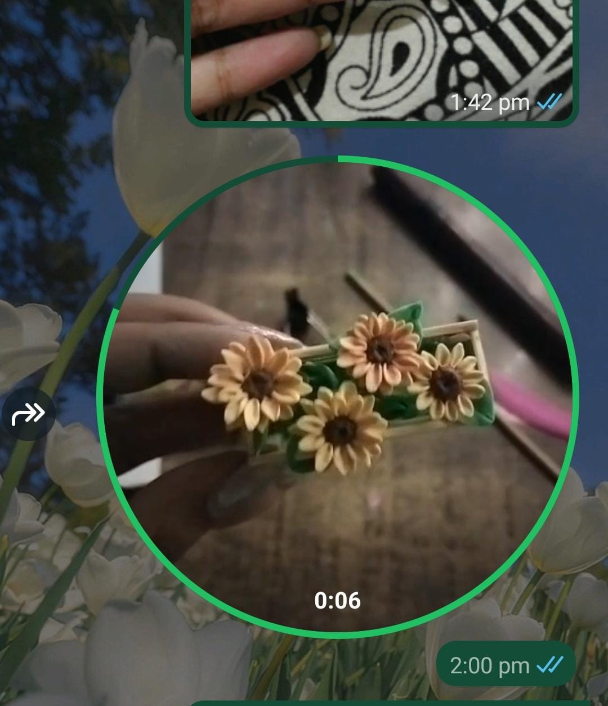
✧ Manicures
I've always loved the feeling of a fresh manicure! I’m also really into general hand and nail care, so I don’t use extensions. I actually love the challenge of making different styles work on my natural nails.
My favourite part? Watching the glitter catch the light and shift between colours from different angles. I could honestly stare at them all day.
A little sparkle never hurt anyone✨
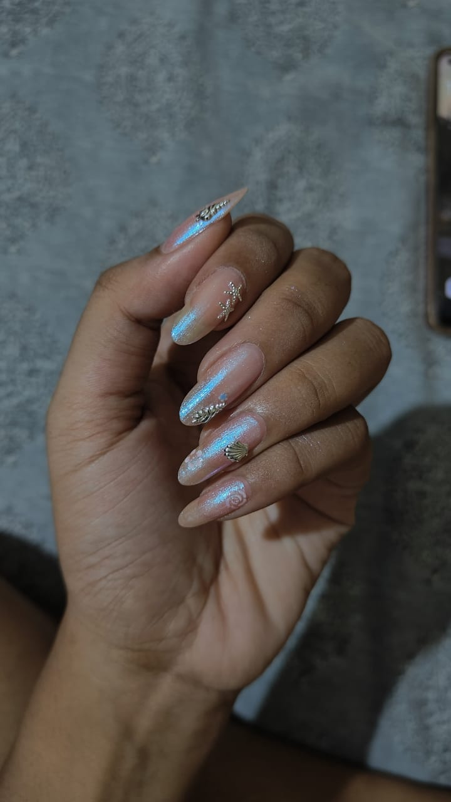
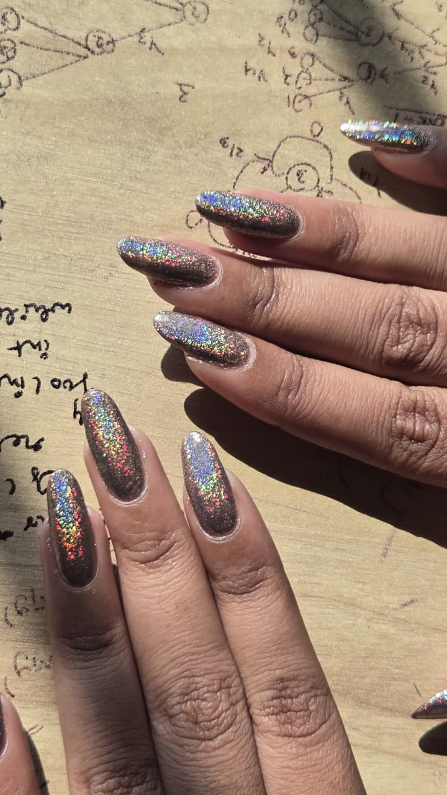
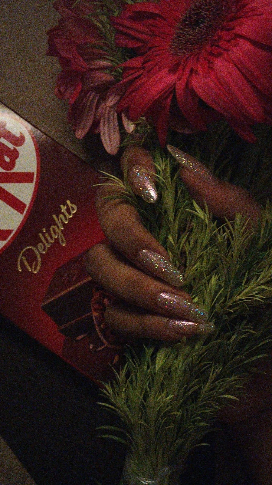
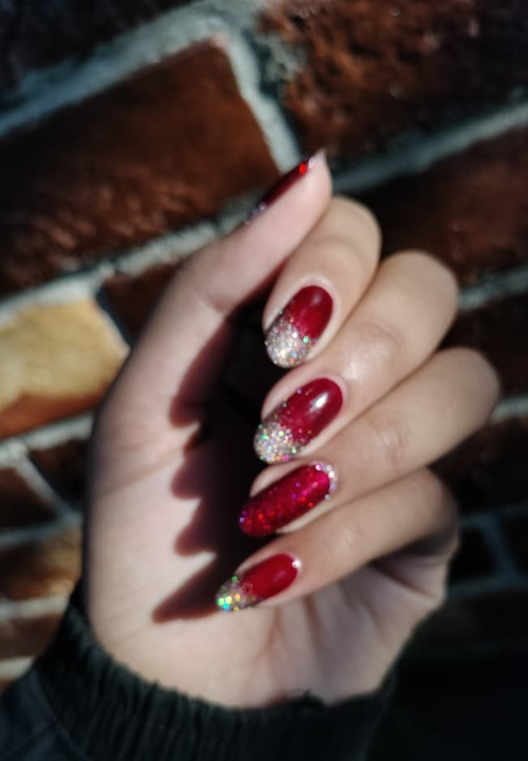
♡ My Pets
I had finches for a long time. They’re low-maintenance, cute little birds that sit on my shoulders while I work, and sometimes they also wear my work.
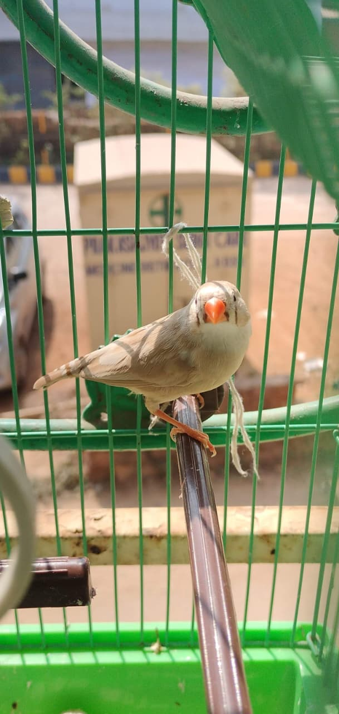
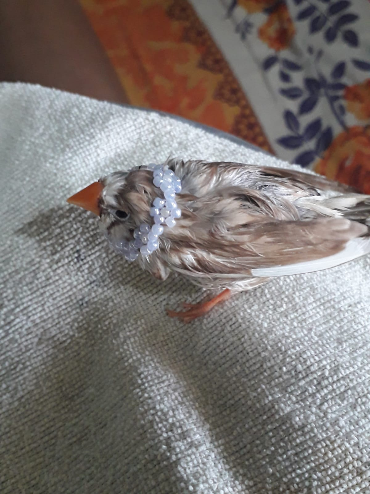
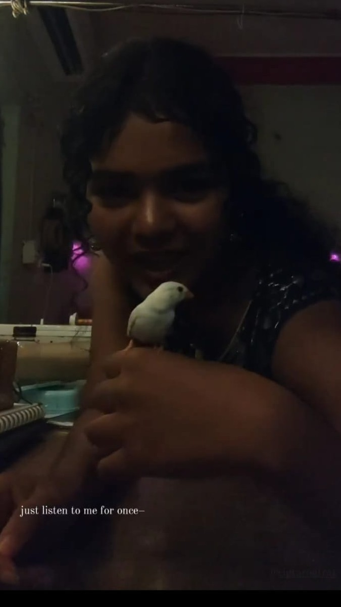
❀ Other Hobbies
A few other things I enjoy spending my time on.
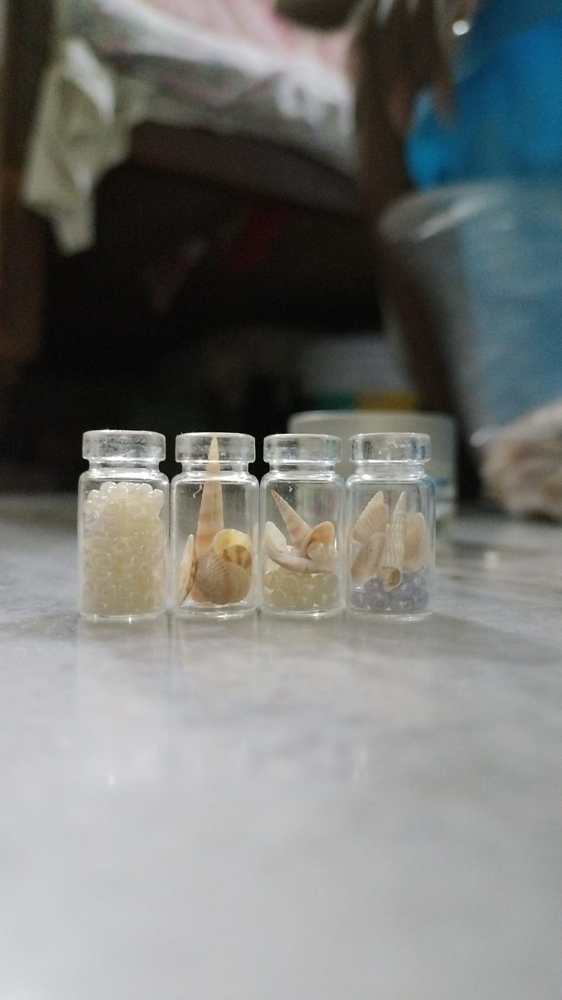
I'm a beach person, so naturally I hoard seashells. The ones that can be used usually end up in my craft archives.
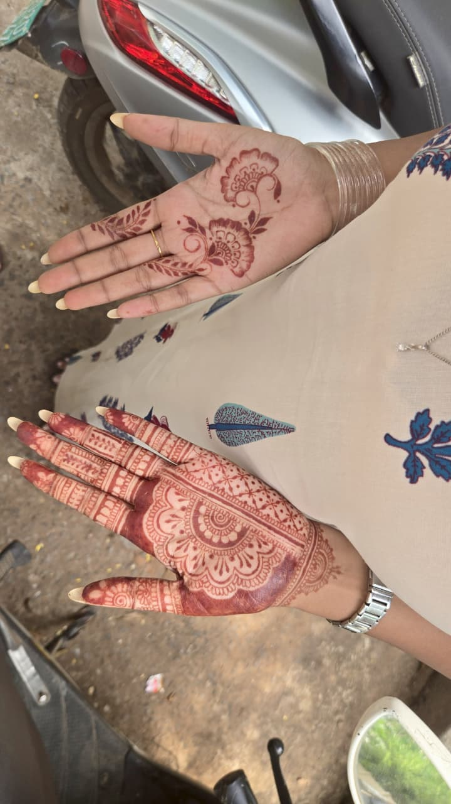
I recently started learning mehendi as a way to connect with the culture. Since I'm still a beginner, even a simple design takes me a long time, but I love seeing how it comes together in the end.
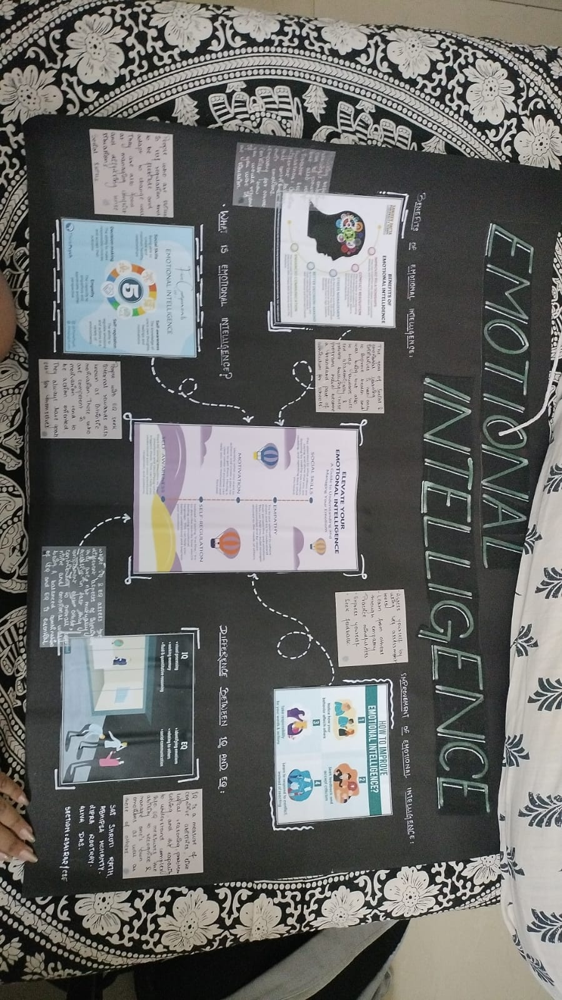
This was a chart presentation we had to make in our first year for one of our subjects.
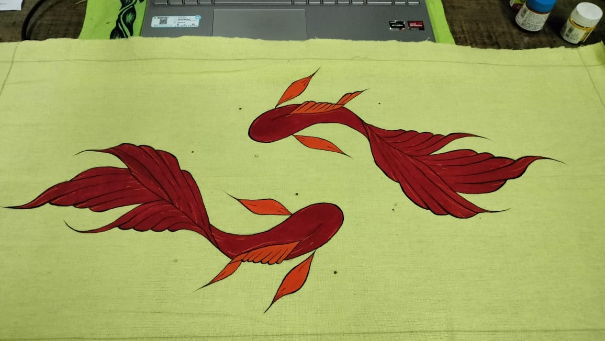
I tried painting on paper, but it didn't work out quite the way I wanted, so I shifted to fabric instead.
⌘ My Tech Stack
Technologies and tools I've worked with:
⋆ What am I learning next?
I'm looking forward to improving my development skills, building projects, and growing as a software engineer.